눈 표면 인터랙션
발이 내려오는 만큼 눈이 눌리고, 지나간 자리에는 발바닥 모양이 남는다. 발의 접촉 위치를 Render Target에 기록하고, RVT·VHM 눈 표면의 노말과 WPO에 반영한 결과다.
시작은 튜토리얼의 Root 소켓 위치에 동그랗게 눈이 파이는 기능이었다. 여기서 각 발이 디디는 자리에 발바닥 모양을 찍도록 확장했다. 위치가 오른쪽으로 밀리고, 가장자리가 늘어지고, 캐릭터와 방향이 맞지 않는 문제를 하나씩 고쳤다.
모양을 맞춘 뒤에는 눌리는 속도가 어색했다. 걷거나 뛸 때 발의 속도는 달라지는데, Timeline은 늘 같은 시간에 맞춰 눈을 눌렀다. 그래서 경과 시간 대신 발이 눈에 들어간 깊이로 눌림을 조절했다. 이후 경사 지형에 적용하고, 양발의 중복 검사와 공유 상태를 정리했다.
| 눈에 보이던 문제 | 바꾼 방식 |
|---|---|
| 원형 자국만 남음 | 발별 노티파이·소켓으로 접점을 잡고 발바닥 텍스처 적용 |
| 발자국이 옆으로 밀리거나 가장자리가 늘어남 | 이미지 중심 보정, 범위 마스크, Mesh Yaw 회전 적용 |
| 걷기·뛰기와 눈이 눌리는 속도가 어긋남 | Timeline을 발의 깊이 비율 계산으로 교체 |
| 양발 로직을 두 곳에서 수정하고 상태도 공유함 | UpdateFoot 공통 함수와 ST_FootState의 발별 상태로 정리 |
현재는 노티파이로 발 검사를 시작하고, Tick에서 깊이 비율을 갱신한다. 보정 전 비율이 1 이상이면 해당 발의 검사를 끝낸다. 리팩토링 후 양발에서 발자국이 생성되는 것을 실행 화면에서 확인했다.

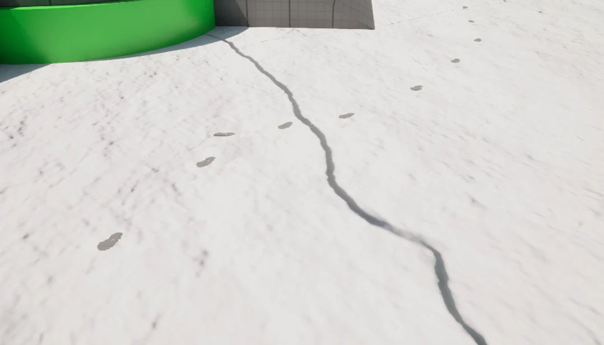
사용 기술: Unreal Engine Blueprint, Animation Notify, Material Editor, Render Target, Runtime Virtual Texture, Virtual Heightfield Mesh.
아래에는 문제를 발견하고 고친 순서를 기록했다. 수식의 세부 전개는 좌표 계산 노트, 실제 노말·WPO 연결과 RT 설정은 글 끝의 상세 자료에서 볼 수 있다.
1. 기본 구현 — 캐릭터가 밟은 곳의 눈이 눌리게 만들기#
1.1 목표와 출발점#
튜토리얼을 따라 만든 출발점은 Root 소켓 위치에 원형 브러시로 눈을 누르는 기능이었다. 이 기반에서 실제 발을 디디는 시점과 위치에 맞춰 자국을 남기도록 확장했다. 발바닥 모양을 만드는 일은 뒤로 두고, 먼저 각 발이 닿으면 그곳의 눈이 눌리도록 연결했다.
캐릭터가 지나간 뒤에도 밟은 흔적이 남도록, RT는 플레이를 시작할 때만 Clear하고 이동 중에는 초기화하지 않게 했다. 현재 구성에서는 이전 자국이 RT에 남는 모습을 확인했다. 시간이 지나면 자국을 지우는 처리는 넣지 않았다.
1.2 구현 — RT의 기록을 RVT·VHM 눈 표면에 연결#
지형을 덮는 눈 표면 위에, 캐릭터가 밟은 부분만 눌린 흔적을 더해야 했다. 지형의 기본 높이와 발의 접촉 기록을 나눠 전달했다.
높이 RVT에는 Landscape의 기본 높이를 담고, VHM이 그 높이로 눈 표면을 만들게 했다. 발이 닿은 위치는 별도의 RT에 기록했다. VHM 머트리얼에서 이 RT를 읽어 노말과 WPO에 연결했다.

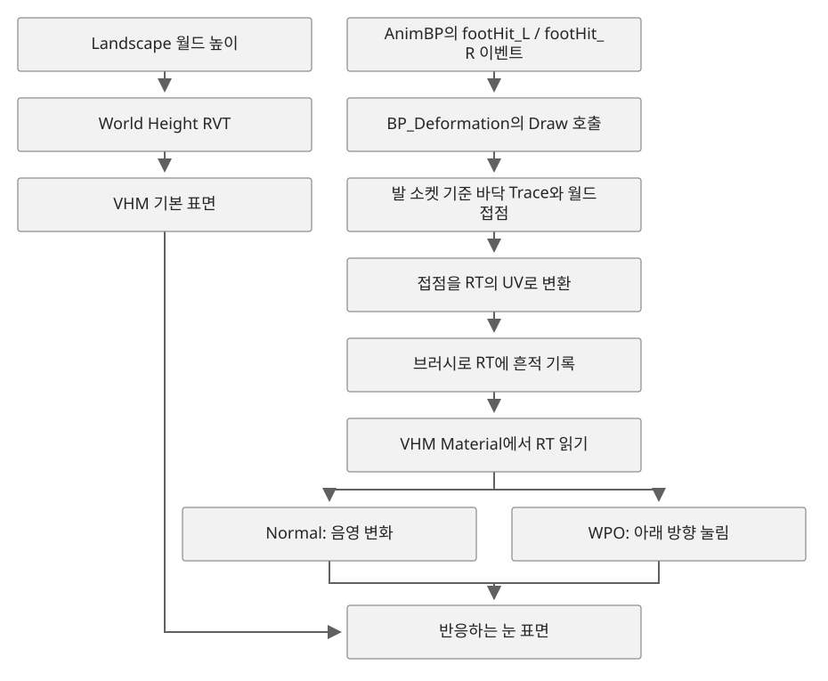
RVT는 기본 지형 높이, RT는 밟힌 위치를 담는다. VHM 머트리얼은 접촉 RT를 직접 읽어 눌린 경계의 음영과 정점 높이를 바꾼다. 노말과 WPO의 실제 연결은 글 끝의 상세 자료에 정리했다.
1.3 Root 테스트에서 발별 접촉으로 확장#
Root 소켓 위치에 찍는 원형 자국만으로는 왼발과 오른발이 각각 디디는 위치를 표현할 수 없었다. 각 발이 닿는 시점과 그 발의 위치를 따로 받아야 했다.
걷기·뛰기 애니메이션에 발 접촉 노티파이를 추가하고, 각 발 중앙에 footHit_L, footHit_R 소켓을 따로 만들었다. Root 대신 해당 발 소켓 위치를 기준으로 바닥을 트레이스하도록 바꿨다.
애니메이션 BP에 footHit_L, footHit_R 이벤트를 만들고, 각 이벤트에서 BP_Deformation의 Draw 함수를 호출했다. 발을 디딜 때마다 이 이벤트가 실행된다.
- 걷기·뛰기 애니메이션의 발 접촉 노티파이
- AnimBP의 footHit_L / footHit_R 이벤트
- BP_Deformation의 Draw 함수 호출
- 해당 발 소켓 위치에서 바닥 트레이스
- 접점에 자국 그리기
이 연결로 이벤트가 그리는 시점을 정하고, 해당 발의 소켓이 트레이스를 시작할 위치를 정하게 됐다. Root 한 곳을 기준으로 하던 자국을 발별 접점에 찍는 구조로 바꿨다.
1.4 기록과 표면 위치 맞추기#
트레이스에서 얻은 위치는 월드 좌표이고, RT에 그릴 위치는 UV 좌표다. 같은 접점을 두 공간에서 가리키려면 좌표를 변환해야 했다.
BP에서 발이 닿은 월드 위치를 RT의 UV로 바꿔 Draw Material에 전달했다. Draw Material to Render Target으로 그 위치에 브러시를 그리고, 바닥 머트리얼은 RT의 기록을 읽도록 연결했다. 이렇게 그릴 위치와 표면에서 읽을 위치를 맞췄다.
이 UV는 RT 안에서 자국을 찍을 위치를 뜻한다. 발바닥 텍스처를 적용할 때는 여기에 이미지의 어느 부분을 놓을지도 정해야 했다. 다음 절에서 두 좌표를 나눠 설명한다.
1.5 결과와 다음 목표#
발이 닿은 위치를 RT에 원형으로 찍자 그곳의 눈이 눌렸다. 찍힌 값이 그대로 남아 이동한 뒤에도 자국이 보였다. 다음으로 원형을 발바닥 모양으로 바꾸고, 캐릭터 방향에 맞춰 찍히도록 확장했다.
2. 첫 번째 확장 — 원형 브러시를 발바닥 자국으로 바꾸기#
2.1 확장 목표와 변경한 부분#
발을 디딘 자리에 자국이 찍히는 것까지는 확인했다. 다음으로는 캐릭터가 옆으로 방향을 바꿔 움직일 때도, 발바닥 모양이 캐릭터가 향하는 방향에 맞게 남도록 만들고 싶었다.
그래서 원형 브러시를 발바닥 텍스처로 바꾸고, Draw Material에서 이미지의 위치·크기·방향을 조절하기 시작했다. 발 접촉 이벤트와 눈이 눌리는 연결은 그대로 사용했다.
이미지로 바꾸니 원형에서는 신경 쓰지 않았던 중심과 경계가 문제가 됐다. 먼저 발이 닿는 자리에 이미지 중앙을 맞추고, 가장자리 처리와 방향 회전을 차례로 추가했다.
2.2 크기와 좌표 기준 정리#
발바닥 텍스처를 적용하면서 먼저 그릴 크기를 정했다. RT 전체에 이미지가 들어가는 것이 아니라, 그 안에서 발자국 하나만큼의 영역을 차지해야 했다. 그래서 이미지의 월드 크기 BrushSize를 RT가 덮는 영역 크기 WorldSize로 나눴다.
BrushSize / WorldSize를 이미지의 UV 크기로 사용하면, 영역 안에서 발자국이 차지할 비율을 정할 수 있다. BrushSize에는 텍스처 여백도 포함되므로 화면에 보이는 발 모양의 크기와는 다르다. 발 접점에 이미지 중앙을 맞추는 식과 계산 예시는 좌표 계산 노트에 정리했다.
2.3 문제 해결 — 발자국이 접점보다 오른쪽에 생김#
원형 브러시에 쓰던 좌표 계산을 발바닥 텍스처에 연결하다 보니, 발자국이 발이 닿는 자리보다 오른쪽에 찍히는 문제가 생겼다. 아직 회전은 추가하기 전이었고, 원본 발 그림도 이미지 중앙에 놓여 있었다.
좌표 계산을 따라가 보니 발 접점에서 BrushLocalUV는 (0,0)이 됐다. 이 값을 Texture Sample에 그대로 넣으면서, 발 접점에서 이미지 중앙이 아니라 (0,0) 모서리를 읽고 있었다. 그만큼 이미지 중앙이 접점에서 이미지 크기의 절반만큼 떨어져 보였다.

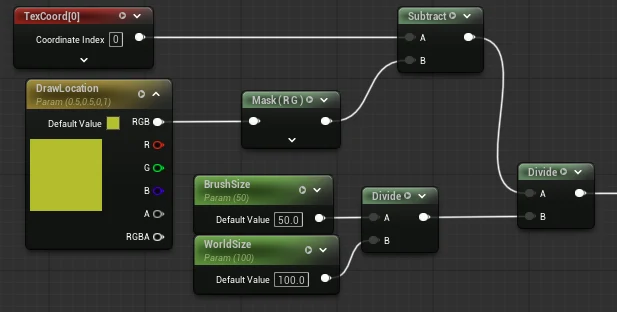

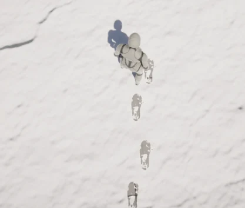
그래서 위치와 크기를 계산한 UV에 (0.5,0.5)를 더했다. 발의 월드 위치를 옆으로 옮기는 대신, 발이 닿는 위치에서 이미지 중앙을 읽도록 바꿨다.

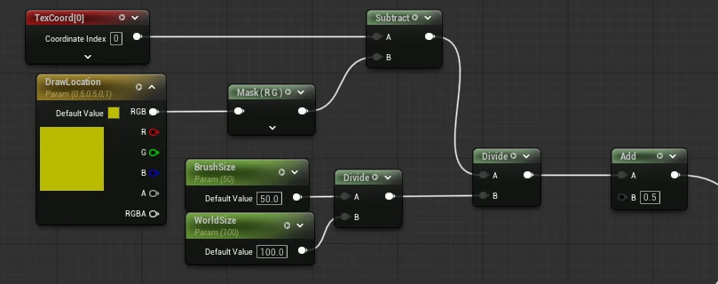

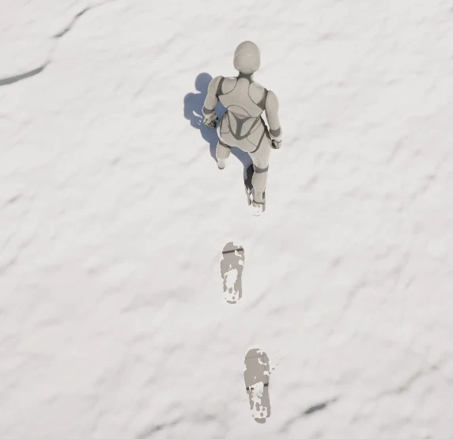
이렇게 보정하자 발자국이 오른쪽으로 밀리는 문제가 해결됐다. 0.5는 발의 위치를 옮기는 값이 아니라, 발 접점에서 읽을 이미지 주소를 중앙으로 맞추는 값이었다.
2.4 문제 해결 — 이미지 가장자리가 밖으로 늘어남#
발자국 위치를 맞추고 나니 이번에는 이미지 가장자리가 밖으로 길게 늘어지는 부분이 보였다. Texture Sample의 Sampler Source를 Clamp로 설정해 둔 상태에서도 같은 문제가 남았다.

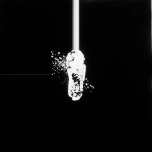
Clamp가 이미지 바깥을 0으로 만드는 것은 아니었다. 이미지 밖의 UV에서도 가장자리 픽셀을 계속 읽기 때문에, 가장자리 값이 바깥으로 늘어나고 있었다.
처음에는 늘어진 부분을 잘라내려고 Texture Sample의 알파값이 0.835보다 큰 곳만 남기는 If를 만들고 RGB에 곱했다. 늘어진 부분을 없애려 했지만, 발자국 안에서도 알파가 낮은 부드러운 경계가 함께 잘렸다. 강한 값만 남아 원래 발 모양을 살리기 어려웠다.
그래서 알파가 얼마나 강한지 대신, UV가 이미지 범위 안에 있는지를 기준으로 바꿨다. 최종 UV에 Subtract(0.5) → Abs를 적용하고, R/G를 나눠 Max의 A와 B에 연결했다. 두 값 중 큰 값이 0.5 이하이면 1, 초과하면 0이 되도록 If를 설정했다. 이렇게 만든 마스크는 이미지의 0~1 사각형 안쪽만 남긴다. 이를 텍스처 알파에 곱해 바깥으로 늘어진 값을 없앴다.

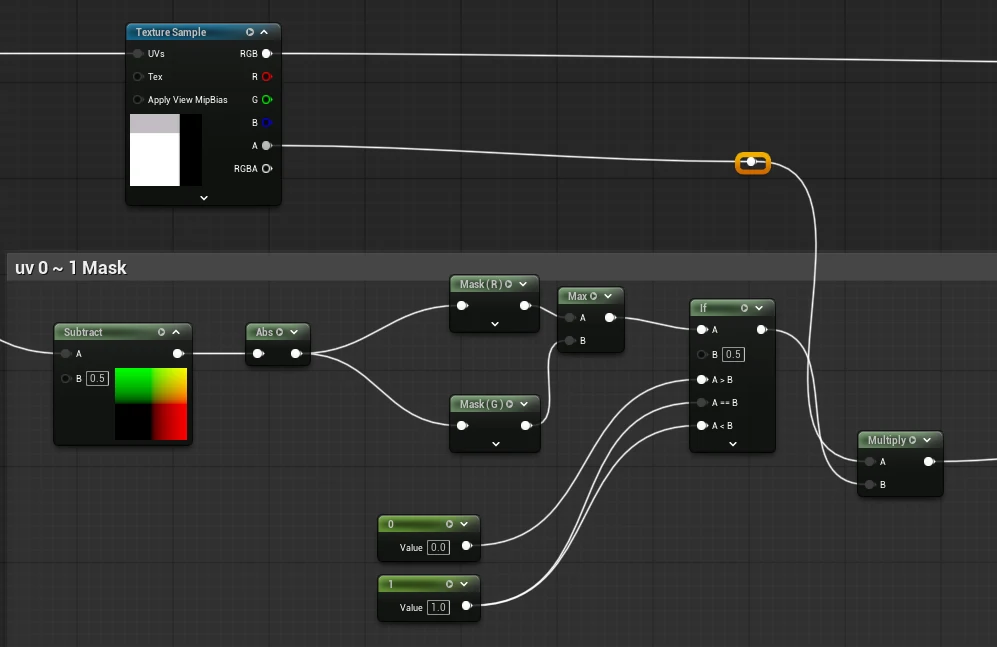
결과: 이미지 안쪽을 남기고 바깥을 제외하도록 범위를 제한했다. 알파 강도만으로 잘랐을 때와 달리, 범위 판정은 텍스처의 밝기가 아니라 UV 위치를 기준으로 한다.

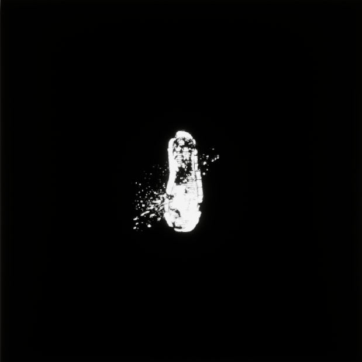
2.5 방향 확장 — 캐릭터가 향하는 쪽으로 회전#
발이 닿는 자리에 발바닥 모양이 찍히도록 위치와 경계를 맞췄다. 이제 캐릭터가 방향을 바꿔 움직일 때도 자국이 그 방향을 따라가야 했다. 발 접점으로 위치는 정했으니, 이번에는 캐릭터가 향하는 방향을 받아 이미지에 회전을 넣었다.
회전 기준은 캐릭터 Mesh의 월드 Z 회전인 Yaw로 잡았다. 캐릭터 참조에서 Mesh를 가져오고, Get World Rotation → Break Rotator로 Yaw를 꺼냈다.
머트리얼 Sine/Cosine의 Period가 1인 설정에서는 한 바퀴를 1로 표현한다. 따라서 도 단위인 Yaw를 그대로 넣지 않고 360으로 나눈 값을 Rotation 파라미터에 전달했다. 90도는 0.25, 180도는 0.5가 된다. 라디안 변환이 아니라 머트리얼 노드의 주기에 맞춘 변환이다.
- Char Ref → Mesh → Get World Rotation → Break Rotator의 Z(Yaw)
- → Divide(360) → 머트리얼 Rotation 파라미터

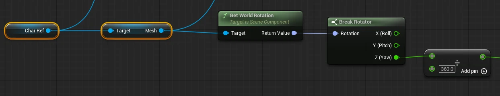
회전할 때 이미지 중심이 접점에서 벗어나지 않도록, 이미지 UV에서 0.5를 빼 중앙을 회전 기준점으로 잡았다. Rotation을 Sine과 Cosine에 넣고 R/G 성분과 곱해 회전 좌표를 구했다. 두 좌표를 Append로 합친 뒤 0.5를 더해 이미지 UV로 되돌렸다. 그래프에는 G 성분을 꺼내기 전 Multiply(-1)로 축을 뒤집는 계산도 들어 있다.

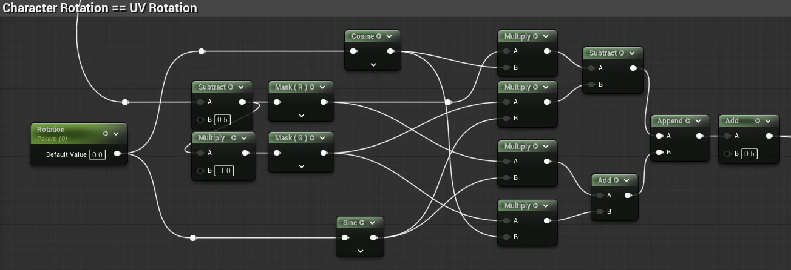
캡처의 계산을 식으로 옮기면 아래와 같다. 여기서 Sine/Cosine은 머트리얼 노드다.
CenteredUV = inputUV − 0.5
LocalU = CenteredUV.r
FlippedV = −CenteredUV.g
CosAngle = Cosine(Rotation)
SinAngle = Sine(Rotation)
회전된 U = LocalU × CosAngle − FlippedV × SinAngle
회전된 V = LocalU × SinAngle + FlippedV × CosAngle
최종 UV = (회전된 U, 회전된 V) + 0.5결과: Mesh의 월드 Yaw를 Rotation에 연결하자 캐릭터가 향하는 쪽으로 발바닥 이미지가 찍혔다. 발 접점으로 자국의 위치를 정하고, Mesh의 방향으로 회전을 맞췄다.
2.6 결과 — 발바닥 모양을 실제 환경에 적용#
RVT·VHM 눈 표면과 발자국 반응을 실제 환경 레벨에 적용했다. 환경 적용 녹화는 약 23초 길이의 로컬 원본이다. 영상에서 추출한 전체 구간의 표본 프레임과 6~7초 구간의 연속 프레임으로 캐릭터 이동 및 지면에 남는 발자국을 확인했다. 영상만으로 내부 Draw 호출 시점이나 GPU 비용까지 확인한 것은 아니다.
3. 두 번째 확장 — Timeline으로 눌림 표현하기#
이 절은 Timeline으로 눌림을 구현한 과정을 다룬다. 현재 사용하는 깊이 계산과 Tick 갱신 방식은 4절에 정리했다.
3.1 목표와 작업 범위#
환경에 적용해 보니 발이 닿는 순간 자국이 툭 나타나는 느낌이 있었다. 발이 눈을 누르는 동안 자국이 서서히 깊어지는 모습을 목표로, 먼저 시간에 따라 RT에 그리는 값을 바꾸는 작업을 했다.
노티파이로 발 검사를 시작하고, 발 소켓에서 바닥까지의 거리를 눈 높이와 비교해 접촉을 판단한다. 접촉하면 해당 발의 Timeline을 처음부터 재생하고, 0~1로 변하는 DrawTime을 Draw 함수와 머트리얼에 전달한다. 재생 중에도 거리를 검사해 발이 눈에서 떨어지면 그리기를 멈춘다. 왼발과 오른발은 각각의 Timeline을 사용한다.
3.2 이벤트 그래프에서 Timeline 실행#
자국이 한 번에 나타나는 대신 서서히 눌리게 하려면, RT에 그리는 강도를 재생 중 계속 바꿔야 했다. Timeline의 Float 트랙에 0~1로 변하는 값을 만들고, 이벤트 그래프의 Update에서 Draw를 호출하도록 연결했다.
Float 트랙과 Draw 함수의 Float 입력 이름은 DrawTime으로 맞췄다. 이름에 Time이 들어가지만 전달하는 값은 경과 시간(초)이 아니라 0~1로 변하는 진행 값이다. 캡처에서 왼발 Draw의 Socket Name은 foot_L_HitSocket이다.
Foot_L 이벤트
→ Timeline의 Play from Start
→ Update에서 Draw 호출
└ Float 트랙 Draw Time → Draw의 Draw Time 입력
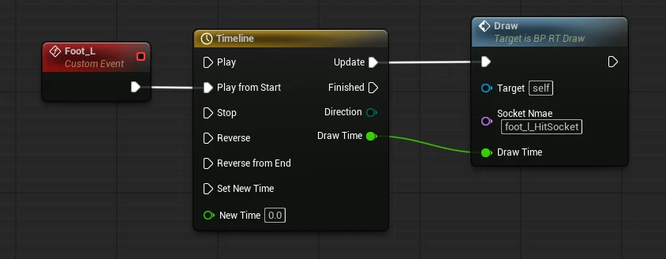
이제 Timeline이 갱신될 때마다 그 프레임의 진행 값이 Draw에 전달된다. 이 값을 다음 단계에서 머트리얼의 그리기 강도로 사용했다.
3.3 DrawTime을 드로우 머트리얼에 전달#
Timeline에서 값이 변해도 머트리얼이 그 값을 읽지 않으면 RT에 그리는 강도는 바뀌지 않는다. 이번 Draw에서 사용할 값을 먼저 MID에 넣고, 그다음 RT에 그리도록 순서를 정했다.
Draw 안에서 Set Scalar Parameter Value로 드로우용 MID의 DrawTime을 설정한 뒤 Draw Material to Render Target을 호출했다. BP의 Parameter Name과 머트리얼의 Scalar Parameter 이름은 DrawTime으로 맞췄다.
- Rotation 값 설정 (Mesh 월드 Yaw / 360)
- Set Scalar Parameter Value: DrawTime = Draw에서 받은 값
- Draw Material to Render Target

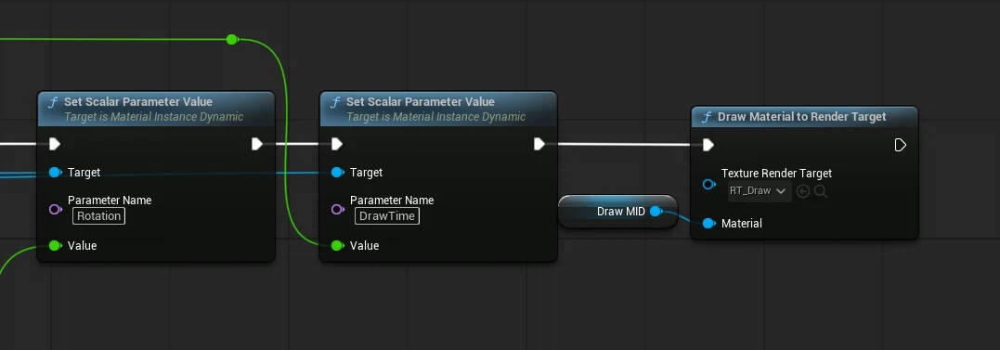
Texture Sample의 RGB에 DrawTime을 곱해 Emissive 쪽으로 보낸다. Opacity에 적용한 방식과 비교했을 때 이 연결에서 눌림 변화가 더 잘 보였다.
Texture Sample RGB × DrawTime → Emissive 쪽 출력
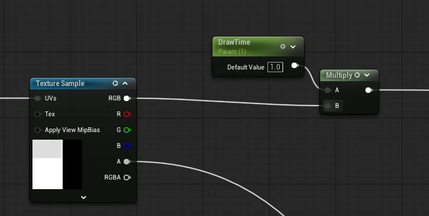
DrawTime이 0이면 이 곱셈 결과는 0이고, 1이면 원래 발바닥이 된다. 이 값이 RT를 거쳐 기존 노말·WPO 표현에 반영된다. 다만 DrawTime이 0.5라고 최종 눌림 깊이도 정확히 절반이 되는 것은 아니다. WPO에서는 RT 값을 다시 Falloff와 Depth로 계산한다.
3.4 재생 시간만으로 해결되지 않은 문제#
처음에는 한 번 재생한 뒤 다음 호출에서 값이 기대대로 변하지 않아 Play from Start로 연결했다. 이후 재생 시간을 0.1초로 두면 자국이 툭 생기고, 1초로 늘리면 밟힌 부분이 길게 이어지는 모습을 확인했다. Draw가 움직이는 발 위치를 따라 계속 그리는 구성이므로, 재생 시간을 늘리는 것만으로 원하는 눌림을 만들기는 어려웠다.
그래서 발이 가까워지면 재생을 시작하고, 다시 멀어지면 그리기를 멈추도록 바꿨다. 바닥에 붙은 상태에서 검사 이벤트가 들어오자마자 재생되는 일을 피하기 위해, 발이 한 번 들렸는지도 기억하게 했다.
3.5 바닥까지의 거리와 눈 표면까지의 거리 구분#
처음에는 발을 디뎠을 때 Distance의 최솟값이 약 4.9로 나와 접촉 기준을 6으로 잡았다.
이후 Hit Actor를 출력해 보니 트레이스는 VHM의 눈 표면이 아니라 아래 바닥을 검출하고 있었다. 따라서 Distance가 작아졌다는 사실만으로 눈에 처음 닿은 시점을 판단할 수 없었다. 계산을 걷어내고 Hit 되는 바닥만 디버깅 테스트에서는 Distance가 0에 가까워져 0.1 미만을 기준으로 시험했다. 4.9와 6은 이전 설정에서 사용한 값이며, 고정된 발 높이나 최종 접촉 기준이 아니다.
눈을 올린 상태에서는 처음 닿는 순간을 눈으로 확인하기 어려웠다. 느리게 관찰한 뒤, 처음 눈에 닿아 보이는 시점의 Distance가 약 20임을 확인했다. 바닥 Hit와 눈 높이 기준 사이의 차이를 비교에 반영했다.
3.6 눈 높이 기준을 접촉 검사에 반영#
트레이스가 검출한 바닥보다 위에 있는 눈 표면을 기준으로 접촉을 판단해야 했다. 그래서 발 소켓에서 바닥까지의 Distance를, 눈 표면과 바닥 사이의 높이 차이와 비교했다.
VHM을 RVT 아래에 어태치해 RVT 위치를 조절하면 VHM도 함께 움직이도록 구성했다. 이 구조에서 눈의 기준 높이를 저장하는 변수가 RVT Z다. 노드에서는 RVTRef → Virtual Heightfield Mesh Component → Get World Location → Z로 VHM의 월드 높이를 읽어 저장한다.

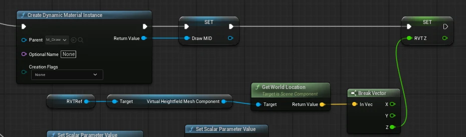
바닥 높이는 Break Hit Result → Impact Point → Z에서 가져왔다.
접촉 기준 거리 = RVT Z − Impact Point Z
Distance > 접촉 기준 거리 → 발이 기준 높이보다 위에 있음
Distance ≤ 접촉 기준 거리 → 발이 기준 높이에 닿았거나 아래로 들어옴
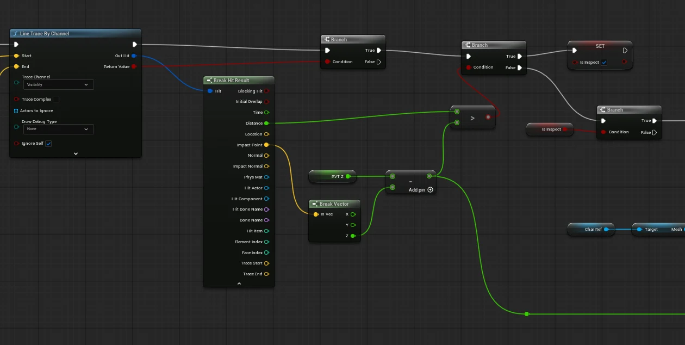
이 계산은 발 소켓이 저장해 둔 눈 높이까지 내려왔는지 판단하는 방식이다. 테스트한 환경에서는 눈 위치를 바꿔도 접촉 시점이 맞았다.
눈 높이로는 RVT를 따라 움직이는 VHM의 기준 높이를 사용한다.
3.7 노티파이로 검사 시작, 착지 후 Timeline 재생#
발이 이미 바닥에 붙어 있을 때 검사가 시작되면 바로 착지로 판단할 수 있었다. 검사 시작 후 발이 한 번 들렸는지를 기록하고, 그다음 내려왔을 때 Timeline을 재생하도록 조건을 나눴다.
노티파이에서 호출하는 Foot_L·Foot_R 이벤트로 검사를 시작한다. 두 이벤트는 공통 IsActive=true, IsInspect=false 설정을 거쳐 Set Actor Tick Enabled를 호출한다.

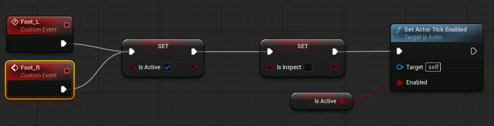
| 변수 | 캡처에서 맡은 역할 |
|---|---|
IsActive | Tick에서 착지를 검사할지 결정한다. 착지를 감지하면 false로 바꾼다. |
IsInspect | 검사 중 발이 접촉 기준보다 위에 있었던 적이 있는지 기억한다. 발 이벤트에서 false로 초기화한다. |
왼발 검사에서는 foot_l_HitSocket부터 아래로 200만큼 트레이스한다. Hit가 있고 Distance가 접촉 기준 거리 이하이면 접촉 상태로 판단한다. 발이 기준보다 위에 있을 때 IsInspect를 true로 기록해 두고, 접촉 상태가 되면 이 값이 true인지 확인한 뒤 Timeline을 시작한다. 캡처의 착지 검사 노드는 >이므로 접촉 상태는 False 실행선으로 이어진다. Timeline Update에서는 ≤의 True 실행선이 Draw로 이어진다.

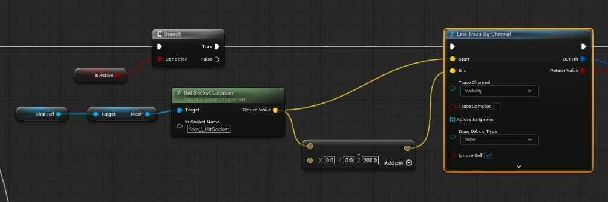
노티파이 → 발 이벤트 → 검사 상태 설정
Tick → IsActive가 true이면 Trace
→ Hit가 있으면 거리로 상태 판단
Distance > 접촉 기준 거리 → IsInspect = true (발 들림 기록)
Distance ≤ 접촉 기준 거리 → IsInspect가 true이면
IsActive = false → Timeline Play from StartIsActive를 false로 바꾸면 다음 Tick의 Branch 뒤 트레이스를 막는다. Actor Tick 자체를 끄는 호출은 이 착지 경로에 없다. 노티파이를 유지한 이유는 필요한 구간에 검사를 열기 위해서이며, 상시 트레이스 방식과 성능을 비교 측정한 것은 아니다.
3.8 재생 중 접촉 검사와 Draw·Stop#
착지 때만 검사하면, Timeline이 재생되는 사이 발이 떠도 계속 그릴 수 있다. 재생 중에도 현재 접촉 상태를 확인해 그리기를 멈출 시점을 정해야 했다.
Timeline의 Update에서 별도 트레이스로 현재 발과 바닥 사이의 거리를 구한다. Hit가 있고 거리 조건을 만족할 때만 Draw를 호출하고, 미검출 또는 기준 초과 시 같은 Timeline의 Stop으로 돌아간다.
Timeline Update → 현재 발 소켓에서 아래로 Trace
→ Hit 없음: Stop
→ Hit 있음: Distance ≤ 접촉 기준 거리
True → Draw(해당 발 소켓, Timeline의 DrawTime)
False → Stop
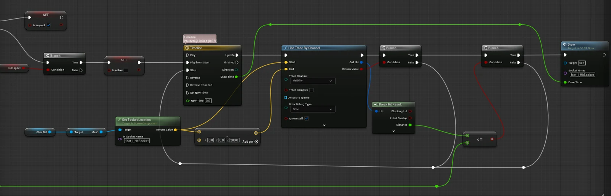
위 최종 왼발 캡처에서는 실행선을 Play에서 Play from Start로 옮겼다. 매번 처음부터 진행 값을 재생하기 위한 수정이다. Update의 Distance는 새 트레이스 결과지만, 비교 기준 거리는 앞쪽 착지 검사에서 계산한 값을 가져오는 배선이다.
Stop은 이후 재생과 Draw 호출을 멈춘다. 이미 RT에 남은 자국을 지우거나 진행 값을 끝까지 채우는 처리는 추가하지 않았다.
3.9 양발 Timeline 분리와 재생 곡선#
처음에는 왼발 여부를 Boolean으로 저장하고 하나의 Timeline 뒤에서 왼발·오른발 Draw를 선택하려 했다. 한쪽 발이 재생 중일 때 다른 발 이벤트가 들어오면 선택값이 바뀔 수 있어, 각 발의 Timeline을 따로 두는 구조로 변경했다.
Event Tick → Sequence가 위쪽 L_Foot, 아래쪽 R_Foot 검사로 이어진다. 각 구역에는 트레이스, 접촉 검사, Timeline, Draw·Stop 경로를 따로 연결했다.

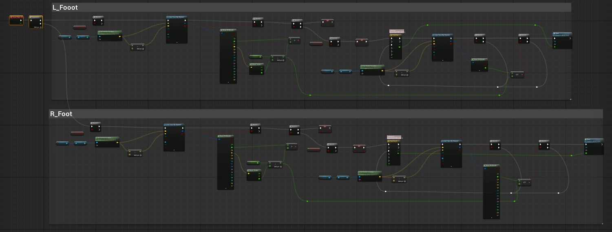
캡처의 Timeline 길이는 0.75초이며, DrawTime은 (시간 0, 값 0)에서 (시간 0.75, 값 1)까지 선형으로 증가한다. 길이를 1초로 늘린 테스트에서도 동작을 확인했다.

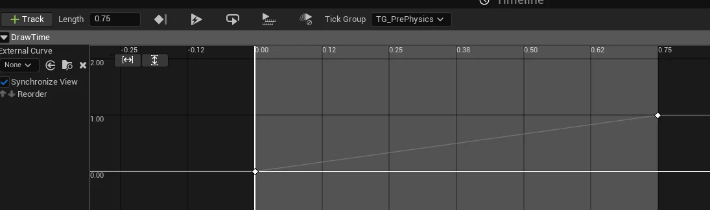
결과: 양발의 진행 값을 각각의 Timeline에서 해당 Draw로 전달했고, 양발 모두 동작하는 것을 확인했다. 다만 재생 길이는 여전히 고정값이고 눈 높이는 접촉 판정에만 사용했다. 이 고정된 재생 시간과 발의 실제 움직임이 어긋나는 문제를 다음 단계에서 다뤘다.
4. 세 번째 확장 — 발이 눈에 들어간 깊이로 눌림 제어하기#
이 절은 평지에서 깊이 계산을 구성한 과정이다. 지형 높이가 달라지는 환경에 적용하면서 눈 두께와 접촉 기준을 수정한 내용은 5절에 정리했다.
4.1 문제점 발견#
걷거나 뛸 때 발을 디디는 속도는 다르다. 그런데 기존 Timeline은 정해진 시간에 맞춰 눈을 눌렀다. 빠르게 밟는 동작에 맞추면 천천히 밟는 동작과 어긋나고, 반대도 마찬가지였다.
발이 빠르게 내려오면 눈도 빠르게 눌리고, 천천히 내려오면 눈도 천천히 눌리게 만들고 싶었다. 그래서 정해진 시간 대신 발이 실제로 움직이는 모습에 맞춰 눌림을 조절하기로 했다.
4.2 노티파이와 Tick으로 발 상태 검사#
발의 깊이로 눌림을 조절하려면 움직이는 발의 현재 위치가 필요했다. 처음에는 BeginPlay에서 소켓 위치를 읽어 R_SocketLocation에 저장했다. 이 값은 시작할 때 한 번만 저장되므로, 이후 발이 움직여도 Trace와 눌림 계산은 처음 위치를 사용하고 있었다.
발이 들리는 구간의 노티파이에서 Foot_L 또는 Foot_R 이벤트를 호출한다. 이벤트는 IsActive = true, IsInspect = false로 설정하고 Actor Tick을 활성화한다.

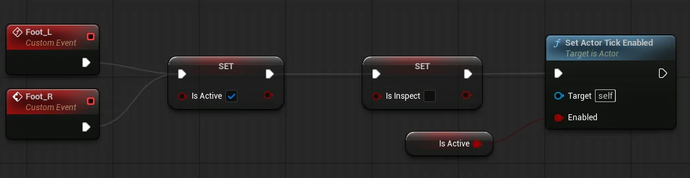
Event Tick → Sequence에서 발 검사 경로로 들어간다. IsActive가 true이면 현재 소켓 위치부터 아래로 200만큼 트레이스하고, Return Value가 true일 때 Hit 정보를 사용한다. 아래 확대 캡처는 foot_r_HitSocket을 사용하는 오른발 경로다.
현재 위치를 검사할 때마다 읽도록 Get Socket Location의 출력을 직접 연결했다. Char Ref → Mesh → Get Socket Location에서 얻은 위치를 Trace의 Start에 넣고, 여기서 (0, 0, 200)을 뺀 값을 End에 넣는다. 같은 노드의 위치 출력은 눌림 계산의 Break Vector → Z에도 연결했다.

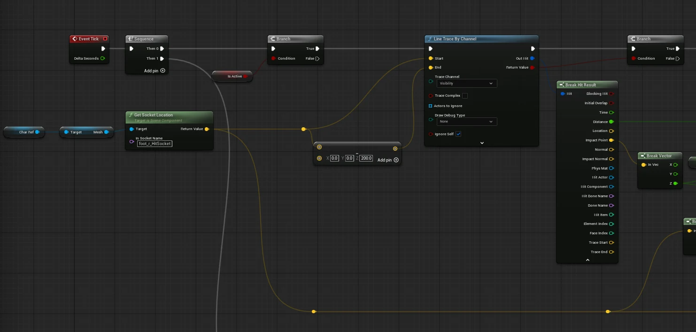
접촉 검사는 기존 연결을 유지했다. Distance > (RVT Z − Impact Point.Z)이면 IsInspect를 true로 설정해 발이 들린 상태를 기록한다. 반대로 거리 조건이 false가 되면 IsInspect를 확인하고, true일 때 Draw 경로로 들어간다.

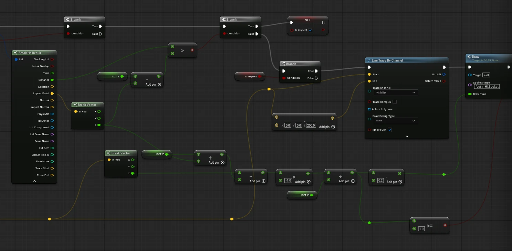
결과: IsActive가 true인 동안 Tick에서 검사가 실행될 때마다 현재 소켓 위치를 읽게 됐다. 트레이스와 눌림 계산이 시작 시점에 저장한 위치를 계속 사용하는 문제를 고쳤다.
4.3 높이 차이를 눈 두께에 대한 비율로 변환#
발의 월드 Z만으로는 눈에 얼마나 들어갔는지 알 수 없다. 눈 표면에서 내려간 깊이를 구하고, 눈 두께로 나눠 그 깊이가 차지하는 비율을 사용했다.
계산 그래프에서는 바닥의 Impact Point.Z에 RVT Z를 더해 눈 표면 Z를 구한다. 소켓 Z에서 이 값을 빼고 −1을 곱하면, 눈 표면에서 발이 내려간 깊이가 양수로 나온다. 이를 RVT Z로 나눠 눌린 비율을 계산했다.
여기서는 바닥 Z가 0이고 눈 두께가 2인 테스트를 기준으로 설명한다. 이 설정에서 RVT Z 값 2를 눈 두께로 사용했다. 앞 절의 VHM 기준 높이와 이 테스트의 두께 값이 같은 조건이다.
눈 표면 Z = Impact Point.Z + RVT Z
높이 차이 = 소켓 Z − 눈 표면 Z
눌린 깊이 = 높이 차이 × −1
보정 전 눌림 비율 = 눌린 깊이 / RVT Z
DrawTime = 보정 전 눌림 비율 − 0.2눈 두께가 2일 때, 발이 눈 표면에 있으면 눌린 깊이는 0이다. 1만큼 내려오면 비율은 0.5, 충돌 바닥까지 2만큼 내려오면 1이 된다. 범위를 비례해서 바꾸는 계산은 눈 두께로 나누는 부분이다.

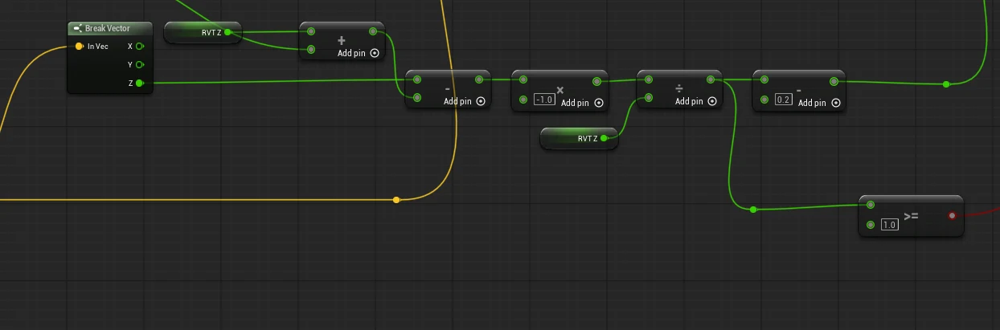
계산한 값을 그대로 전달하면 발이 눈 표면에 닿는 순간부터 너무 깊게 파여 보였다. 이를 줄이려고 DrawTime에 전달하는 값에서 0.2를 뺐다. 같은 발 위치에서도 낮은 강도가 전달되도록 한 조정이다. 별도의 지연 시간을 넣거나 애니메이션 속도를 바꾼 것은 아니다. 종료 검사에는 보정 전 값을 사용한다.
| 발이 내려간 깊이 | 보정 전 비율 | DrawTime에 전달하는 값 |
|---|---|---|
| 0 | 0 | −0.2 |
| 1 | 0.5 | 0.3 |
| 2 | 1 | 0.8 |
표는 눈 두께 2를 대입한 계산값이다. 접촉 초기에 전달값이 음수가 될 수 있다. 여기서는 보정 의도와 입력값을 설명하며, 음수가 최종 RT에 저장되는 방식까지 측정한 것은 아니다.
4.4 Draw를 반복하고 호출 뒤 검사 종료#
발이 눈에 닿자마자 IsActive를 끄면 그 뒤로는 DrawTime이 갱신되지 않는다. 반대로 계속 검사하면 발이 충분히 내려온 뒤에도 같은 경로를 실행하게 된다. 눌리는 동안은 매 Tick 갱신하고, 보정 전 비율이 1 이상이 되는 Draw 호출 뒤에 검사를 끝내도록 순서를 정했다.
IsInspect 검사를 통과하면 소켓에서 아래로 트레이스하는 실행 경로를 거쳐 Draw를 호출한다. 오른발 Draw에는 foot_r_HitSocket과 계산한 DrawTime을 전달한다.
Draw 호출이 반환되면 보정 전 눌림 비율이 1 이상인지 검사한다. True이면 IsActive를 false로 바꾸고, False이면 값을 유지해 다음 Tick에서도 갱신한다. Draw 내부에서는 IsFalling이 true일 때 그리기를 건너뛰므로, 호출 이후의 종료 처리가 실제 RT 기록 성공을 확인하는 것은 아니다.
IsInspect가 true
→ Trace → Draw(오른발 소켓, 보정한 DrawTime)
→ 보정 전 눌림 비율 ≥ 1
True → IsActive = false
False → 상태 유지, 다음 Tick에서 다시 계산
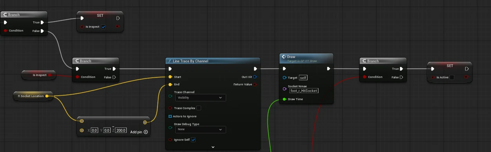
종료 비교는 ≥ 1로 설정했다. 계산값이 한 프레임 사이에 1을 넘어가도 종료 조건에 들어가도록 했다. 여기서 IsActive는 Tick 내부 Branch를 막는 변수이며, 이 경로에서 Actor Tick 자체를 끄지는 않는다.
4.5 계산한 값을 기존 머트리얼에 전달#
깊이로 계산한 값도 기존의 그리기 강도 입력에 전달할 수 있었다. 따라서 Timeline에서 받던 값을 깊이 계산 결과로 바꾸고, Draw 함수와 머트리얼의 DrawTime 이름은 유지했다. Draw 함수의 Set Scalar Parameter Value와 RT에 그리는 연결도 그대로 사용한다. 머트리얼에서도 Texture Sample RGB × DrawTime을 Emissive Color로 전달한다.

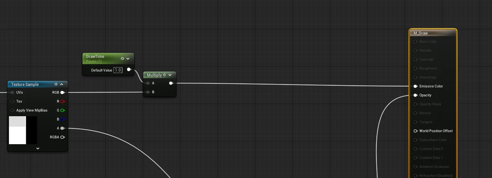
RT에 남긴 값을 노말과 WPO에 반영하는 연결은 유지했다.
4.6 결과#
이제 눈이 눌리는 정도는 Timeline의 재생 시간이 아니라 발이 눈 안으로 들어간 깊이에 따라 정해진다. 발이 내려가는 동안 계산값을 Draw에 전달하고, 보정 전 눌림 비율이 1 이상이면 Draw 호출 후 검사를 끝낸다.
접촉 직후 너무 깊게 파이는 모습은 전달값을 0.2 낮추며 조정했다. 이 보정값은 현재 테스트 동작을 보며 맞춘 값이다.
5. 경사와 굴곡이 있는 Landscape에 적용하기#
5.1 문제 해결 — VHM의 위치와 눈 두께 분리#
평지에서 사용하던 RVT Z는 VHM 컴포넌트의 월드 Z를 저장한 값이었다. 바닥 Z가 0인 테스트에서는 이 값을 눈 두께처럼 사용했지만, 높이가 달라지는 Landscape에서는 VHM의 기준점 위치가 발밑 눈 두께를 뜻하지 않았다. 접촉 검사에 쓰던 RVT Z − Impact Point.Z도 지형의 월드 높이에 따라 달라졌다.
눈 두께를 별도 변수 SnowThickness로 만들고, 머트리얼과 접촉 계산에서 같은 값을 사용하도록 바꿨다. BP에서 이 값을 MPC_VHM의 SnowThickness에 전달하고, VHM 머트리얼에서는 Collection Parameter로 읽는다.

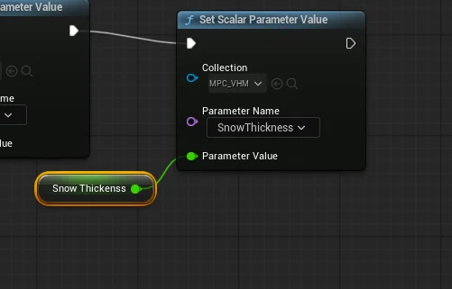
머트리얼에서는 (0, 0, 1) × SnowThickness를 기존 발자국 눌림 결과에 더해 WPO로 보낸다. 밟지 않은 표면은 지형보다 눈 두께만큼 위에 있고, 발자국이 기록된 곳은 기존 Depth 계산에 따라 내려간다.

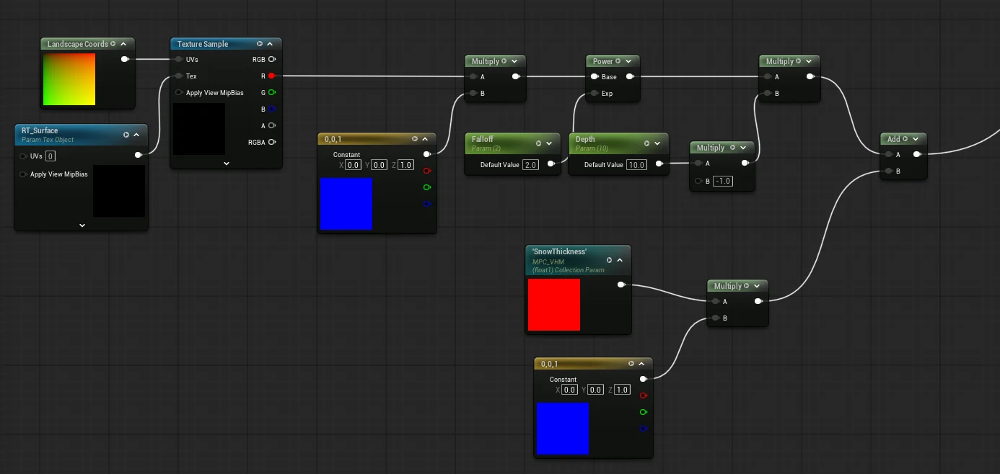
발 소켓에서 수직 아래로 트레이스해 바닥을 검출한 뒤에는 Distance와 SnowThickness를 직접 비교한다. 바닥까지의 거리에 이미 발과 지형의 높이 차이가 들어 있으므로, 접촉 비교에서 Impact Point.Z를 다시 빼지 않는다.
Hit가 있으면:
Distance > SnowThickness → IsInspect = true
Distance ≤ SnowThickness → IsInspect 확인 후 Draw 경로
눈 표면 Z = Impact Point.Z + SnowThickness
보정 전 눌림 비율 = (눈 표면 Z − 소켓 World Z) / SnowThickness
DrawTime = 보정 전 눌림 비율 − 0.2
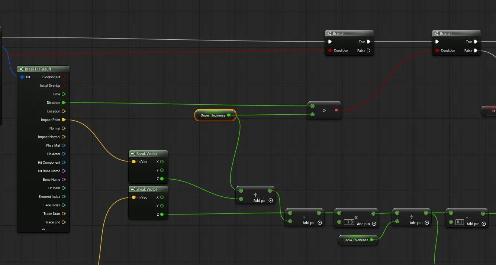
바닥의 월드 Z가 음수여도 계산은 같다. 소켓과 Impact Point를 같은 월드 좌표로 비교하고, 발밑 바닥 높이에 눈 두께를 더해 눈 표면의 Z 좌표를 구한다. 지형의 위치와 눈 두께를 구분하면서, 높이가 다른 곳에서도 같은 두께 기준으로 발의 접촉과 눌림을 계산하게 됐다.
5.2 문제 해결 — VHM이 지형의 세부 굴곡을 충분히 따라가지 못함#
눈 두께와 접촉 계산을 맞춘 뒤에도, 굴곡이 있는 곳에서는 캐릭터가 눈에 묻히거나 VHM 표면이 아래 지형을 통과하는 모습이 남았다. 눈 두께와 발자국 변위를 제외하고 비교하려고 WPO 연결을 끊었지만, 기본 표면에서도 차이가 보였다.

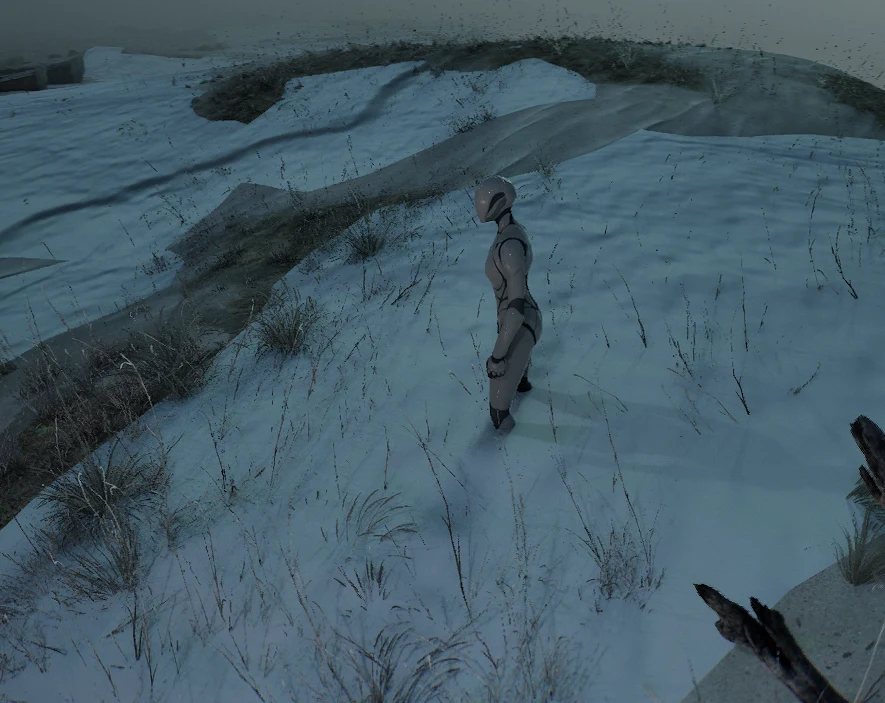
Landscape의 Collision Mip Level과 Simple Collision Mip Level은 모두 0이었다. VHM의 LOD 0 Screen Size를 1에서 0.5로 낮추자 형태가 조금 개선됐지만, 0.25에서는 프레임 저하가 생겼다. 메쉬를 더 촘촘하게 만드는 것만으로 해결하려 하지 않고, Landscape가 RVT에 높이를 기록하는 설정을 살펴봤다.
공식 문서를 찾아보니 Virtual Texture Render with Quad는 Landscape를 RVT 페이지에 단일 사각형으로 렌더링하는 옵션이었다. 함께 사용하는 High Quality PerPixel Height는 이 방식에서 높이맵을 고품질로 보간하는 옵션이며, Render with Quad를 켰을 때 적용된다. 이름의 Quad는 RVT에 기록하는 방식을 뜻하며, 화면에 보이는 VHM 전체를 평면 한 장으로 바꾼다는 뜻은 아니다. Epic: ALandscapeProxy의 Virtual Texture 옵션
변경 전에는 Render with Quad가 비활성 상태였다. Render with Quad를 켜고 High Quality PerPixel Height 활성화를 유지했다.
밟은 자리에서 눈 아래의 흙바닥이 보이도록 Landscape의 Draw in Main Pass는 Always로 유지했다.

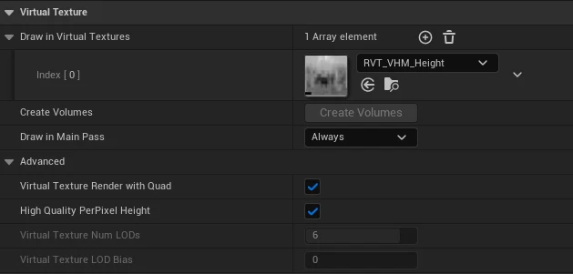
결과: 설정을 바꾼 뒤 VHM이 지형의 굴곡을 따라가는 모습이 크게 개선됐다. 아래는 WPO를 끈 상태에서 비교한 결과로, 눈 두께만큼 표면을 올리기 전이어서 일부 구간은 원본 지형과 겹쳐 보인다.

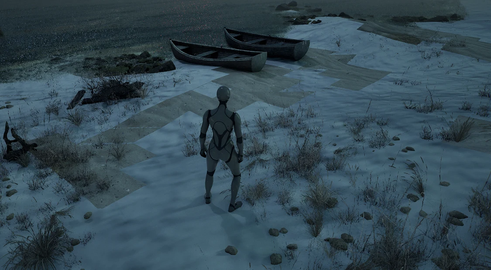
5.3 WPO를 다시 적용한 결과#
기본 표면이 지형을 따라가는 것을 확인한 뒤, 눈 두께와 발자국 변위를 함께 적용한 상태에서도 확인해야 했다. 테스트를 위해 끊어 둔 WPO를 다시 연결했다.
결과: 눈 표면이 SnowThickness만큼 올라가면서 지형과 겹치던 부분이 사라졌다. 경사진 구간을 걸어 보니 눈이 지형의 굴곡을 따라 덮였고, 밟은 자리에는 발자국이 남았다.

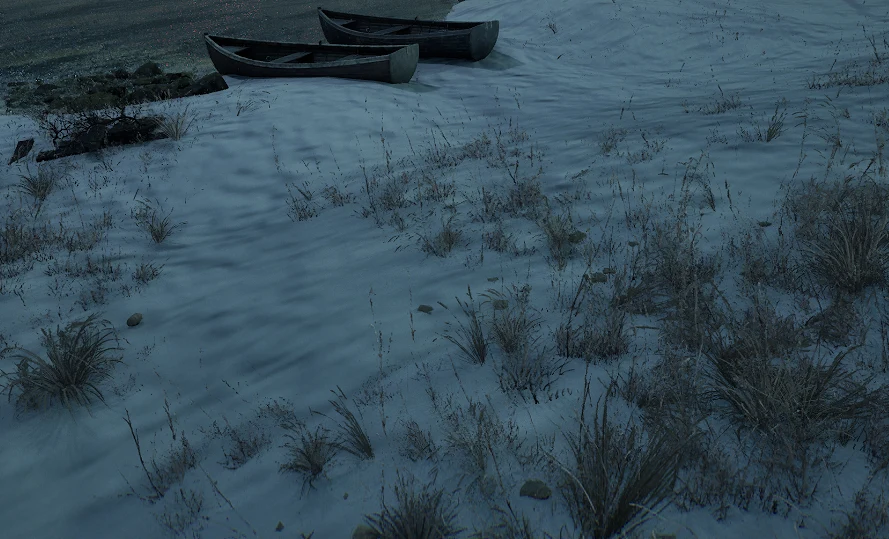
6. UpdateFoot으로 공통 로직과 발별 상태 정리#
이벤트 그래프에 좌우 발의 접촉 검사와 눌림 계산이 각각 펼쳐져 있어, 같은 로직을 두 곳에서 수정해야 했다. 계산은 한 함수에서 수정하고, 검사 상태는 각 발에 따로 남기도록 구조를 바꾸기로 했다.
기존 코드에서도 Tick의 Sequence로 양발을 순서대로 처리하고 같은 Draw 함수를 호출했다. 다만 양쪽 경로가 같은 IsActive와 IsInspect를 사용해 한쪽 발의 상태 변경이 다른 발의 검사에도 영향을 줄 수 있었다. 공통 함수에 소켓 이름만 전달하는 것으로는 이 상태 공유가 해소되지 않아, 검사 상태도 발별로 나눴다.
소켓 이름과 검사 상태를 함께 전달하도록 ST_FootState에 SocketName, IsActive, IsInspect를 묶었다. BP에는 LeftFootState와 RightFootState를 따로 두고, Tick에서 각각 같은 UpdateFoot 함수로 전달한다.

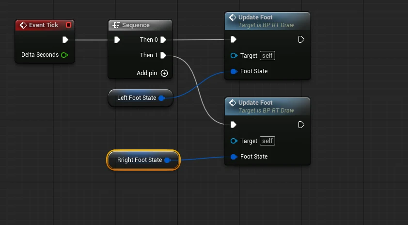
함수에서는 Break ST Foot State로 입력 상태를 읽는다. 구조체의 IsActive로 검사 여부를 판단하고, SocketName으로 현재 발 위치를 구해 바닥을 트레이스한다.

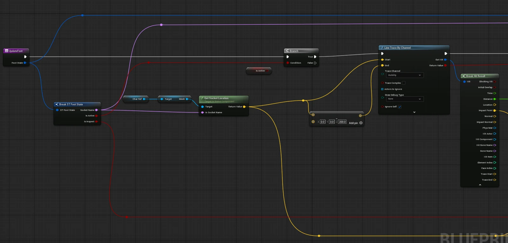
발이 눈 표면보다 위에 있으면 Set Members in ST Foot State로 입력 상태의 IsInspect만 true로 바꾼다. 착지 경로에서도 같은 구조체의 IsInspect를 확인한다. 새 구조체를 만드는 대신 전달받은 상태에서 필요한 항목만 변경한다.

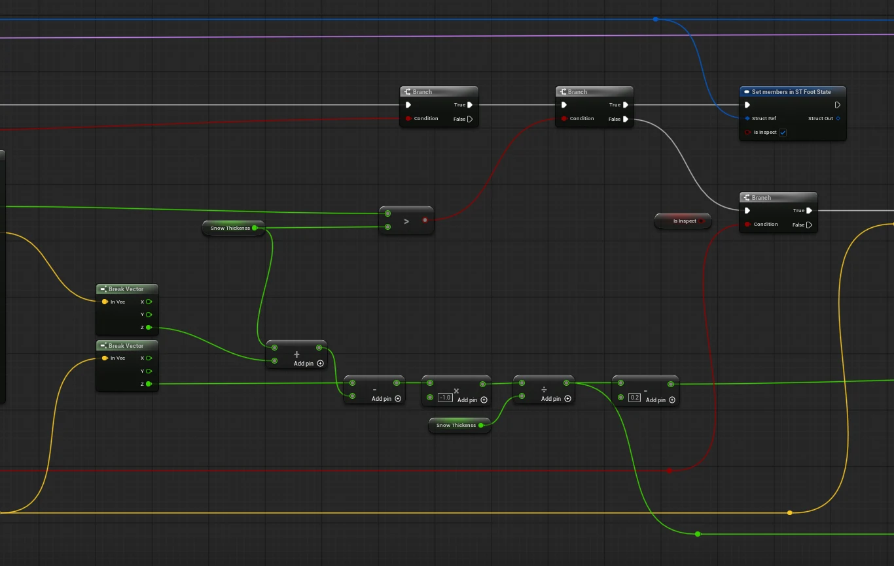
Draw에는 구조체의 SocketName과 0.2를 뺀 눌림 비율을 전달한다. Draw 이후 종료 검사는 보정 전 비율로 하고, 1 이상이면 같은 구조체의 IsActive를 false로 바꾼다.

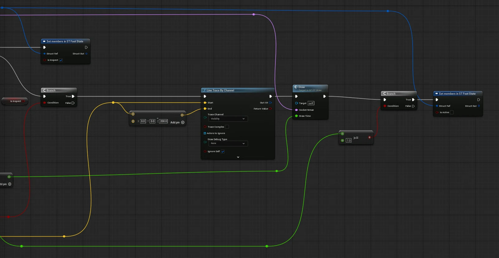
함수 안에서 바꾼 상태가 다음 Tick에도 이어져야 하므로, 입력 FootState에는 Pass-by-Reference를 켰다. Set Members가 변경한 값이 호출한 쪽의 LeftFootState 또는 RightFootState에 유지되어 다음 Tick에서도 이어진다. 노티파이에서는 해당 발의 상태만 IsActive=true, IsInspect=false로 설정해 새 검사를 시작한다.
위 캡처는 연결을 구성하던 단계의 기록이다. 최종 입력의 참조 전달 설정은 최종 Blueprint 코드에서 확인했다.
거리와 눈 두께의 비교, 눌림 비율 계산, DrawTime의 0.2 보정은 기존 식을 유지했다. Draw 내부에서도 전달받은 소켓 이름으로 위치를 구하고 전달받은 DrawTime을 머트리얼 파라미터에 적용한다. 결과: 좌우 계산은 한 함수에서 수정하고, 검사 시작·들림 기록·종료 상태는 각 발에 따로 보관하게 됐다. 리팩토링 후 실행 화면을 천천히 관찰해 왼발과 오른발 모두 발자국이 생성되는 것을 확인했다.
상세 자료 — RT 기록을 노말과 WPO에 연결한 그래프#
VHM(Virtual Heightfield Mesh) 머트리얼에서 RT_Surface를 읽어 노말과 WPO에 연결했다. 아래는 실제로 사용한 두 경로의 그래프다. 같은 발자국을 표현하지만 노말과 WPO가 바꾸는 값은 다르다.
| 표현 | 바꾸는 값 | 발자국에서의 역할 |
|---|---|---|
| Normal | 표면 셰이딩에 사용하는 방향 | 눌린 경계와 굴곡에서 빛 반응을 만든다. |
| WPO | 메쉬 정점의 월드 위치 | 발자국 위치의 정점을 아래로 움직인다. |
노말은 표면의 방향을 바꿔 음영을 만들고, WPO는 정점을 움직여 형태를 바꾼다. 두 효과를 나눠 보면 각각 발자국에 어떤 영향을 주는지 확인할 수 있다. Epic: Material Inputs
Normal — RT의 높이 변화와 표면 디테일 결합#
RT에 찍힌 자국의 경계가 빛에 반응하도록, 주변 높이 차이에서 노말을 구했다. 여기에 별도 표면 노말을 더해 발자국의 큰 굴곡과 표면 디테일을 함께 표현하려 했다.
RT_Surface를 Texture Object로 NormalFromHeightmap의 Height Map에 넣고, Landscape Coords를 Coordinates에 연결했다. 주변 UV에서 읽은 높이 차이로 발자국의 기울기를 구한다. Normal Map Intensity에는 상수 1을 연결했다.
주변 높이를 비교할 UV 간격은 다음과 같이 계산한다.
Height Map UV Offset
= (NormalMapOffsetPerMeter / WorldSizeMeters) × NormalMapDirection월드 길이로 정한 샘플 간격을 영역 전체 길이로 나눠 UV 간격으로 바꾼다. 두 길이 값의 단위는 같아야 한다. 캡처의 기본값은 NormalMapOffsetPerMeter = 0.2, WorldSizeMeters = 120, NormalMapDirection = −1이다. 이를 대입하면 UV Offset은 약 −0.001667이다. 이 값은 RT의 한 텍셀 간격과 별도로 설정한다.
그래프 주석에는 NormalMapDirection = −1을 파인 방향의 노말을 표현하기 위한 값으로 적었다. 배선을 보면 이 값은 UV Offset에 곱해져 높이를 비교하는 방향을 바꾼다.

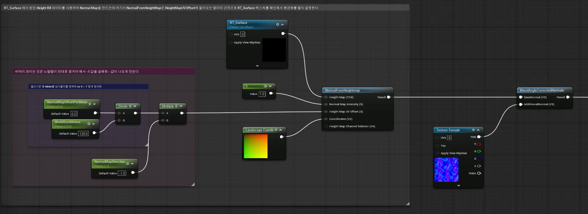
계산한 노말은 BlendAngleCorrectedNormals의 BaseNormal에, 별도 노말 텍스처의 RGB는 AdditionalNormal에 연결했다. 발자국의 큰 굴곡 위에 표면의 세부 노말을 더하는 구조다.
WPO의 발자국 눌림 계산#
발자국을 음영으로만 보이게 하는 데서 더 나아가, 밟힌 곳의 정점이 아래로 움직여야 했다. RT의 발자국 값에 아래 방향과 눌림 깊이를 적용해 WPO로 전달했다.
Landscape Coords로 RT_Surface를 읽고 R값에 (0,0,1)을 곱했다. 이 결과를 Power의 Base에 넣고 Falloff를 Exp에 연결한 뒤, Depth × −1을 곱했다. X/Y는 그대로 두고 월드 Z의 아래 방향으로 정점을 움직인다.
RT의 R값을 FootprintMaskValue라고 할 때, 0 ≤ FootprintMaskValue ≤ 1, Falloff > 0이면 다음 식으로 쓸 수 있다.
방향 벡터 적용 = FootprintMaskValue × (0, 0, 1)
Power 적용 = (0, 0, FootprintMaskValue^Falloff)
발자국 변위 = (0, 0, −Depth × FootprintMaskValue^Falloff)캡처의 기본값은 Falloff = 2, Depth = 10이다. FootprintMaskValue가 0이면 변위도 0이고, 0.5이면 Z 변위는 −2.5, 1이면 −10이다. Falloff는 0~1 사이의 값을 조절해 눌린 모양을 바꾸고, Depth는 전체 깊이를 정한다. 음수 부호는 아래로 누르는 방향을 뜻한다. 캡처의 기본값을 대입한 계산이며, 실행 중 파라미터를 측정한 결과는 아니다.

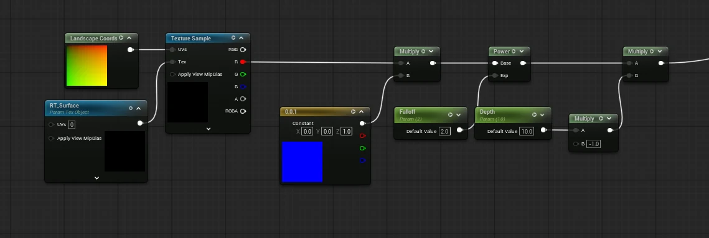
최종 WPO에는 이 발자국 변위와 5.1절의 (0, 0, SnowThickness)를 더한다. 밟지 않은 곳은 눈 두께만큼 올라가고, 발자국이 기록된 곳은 계산한 변위만큼 내려가는 구성이 됐다.
두 경로가 공유하는 데이터와 조절값#
노말과 WPO는 같은 RT_Surface와 Landscape Coords를 사용한다. 노말은 샘플 간격과 NormalMapDirection으로 기울기를 조절하고, WPO는 Falloff와 Depth로 눌린 모양과 깊이를 조절한다. 캡처에서 WPO의 Power·Depth 계산은 NormalFromHeightmap에 연결돼 있지 않다. 따라서 WPO 값을 바꿔도 노말이 같은 비율로 바뀌지는 않는다.
VHM 작업 로그의 VHM 학습 기록과 이번 그래프에서 같은 두 경로를 확인할 수 있다. 발자국 기록용 RT에는 다음 설정을 사용했다.
| 항목 | 설정 |
|---|---|
| 해상도 | 4096 × 4096 |
| Render Target Format | RGBA16F (RTF_RGBA16f) |
| Clear 시점 | 플레이 시작 시 |
| 이동 중 기록 | Clear하지 않고 발자국을 그리며, 이전 자국이 남는 동작을 확인 |
Blend Mode와 같은 위치를 반복해서 그릴 때의 합성 연산은 별도로 기록하지 않았다. 위 설정과 자국 유지 결과를 구분해 적었다.
표현 품질을 결정하는 두 가지 해상도#
RT 해상도는 발자국을 얼마나 촘촘하게 기록할지 결정한다. 한 축의 길이가 WorldSize, 픽셀 수가 RTPixelCount라면 한 텍셀이 표현하는 길이는 약 WorldSize / RTPixelCount다. 예를 들어 1000cm 영역을 1024픽셀에 담으면 텍셀당 약 0.977cm이고, 28cm 이미지 사각형은 약 28.7픽셀을 차지한다. 실제 설정값이 아닌 비교용 예시다.
WPO가 만드는 형태는 메쉬의 정점 배치에도 영향을 받는다. RT 해상도만 높인다고 정점 변위도 그만큼 세밀해지는 것은 아니다. RT에 기록된 모양, 노말의 음영, WPO로 눌린 형태는 서로 다른 단계의 결과다.
확인 결과와 남은 검증#
경사 지형에서 눈이 굴곡을 따라 덮이고, 이동 경로에 발자국이 남는 모습을 5.3절 영상으로 기록했다. 이 영상은 발별 상태 분리 전 기록이다. 리팩토링 후에는 실행 화면에서 양발 생성을 확인했고, 최종 Blueprint 코드에서 FootState의 참조 전달을 확인했다. 리팩토링 후 실행 영상은 아직 없다.
CPU·GPU 비용과 정합 오차는 측정하지 않았다. Blend Mode와 반복 Draw의 합성 연산, 음수 입력의 최종 저장 결과도 별도 검증하지 않았다. RT 해상도·포맷·Clear 시점은 위 상세 자료에 적었다.
한 페이지 요약 · 원본 기술·수식 기록 · 트러블슈팅 전체 기록 · 검산과 확인 범위 · 캡처 출처